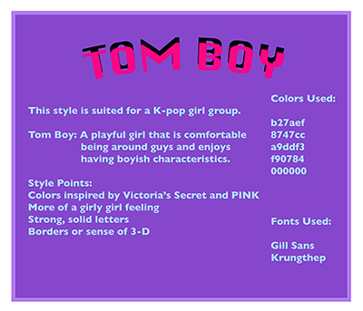
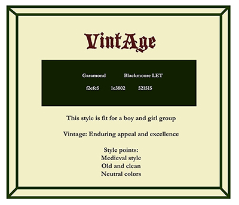
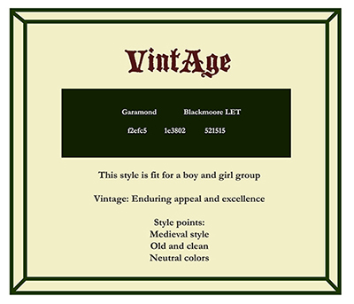
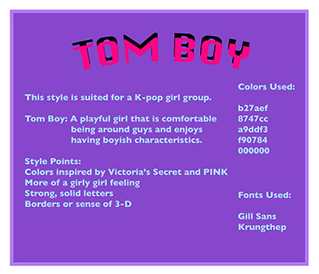
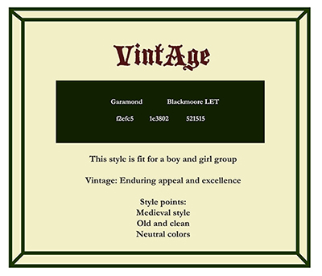

Clique


Tomboy

Vintage
 


Graphic Design 1
|
Nemesis Become the master Monograph Love Letter |


Work
In one to three sentences, what do you do? Make a design for a K-pop girl group called 'Tom Boy' that will be accepted/loved by Americans and throughout the world.
What's your favorite thing about it? K-pop groups choose a certain theme but its random all the time. Aesthetics and being unique are important.
Can you describe your industry to me? What is it and how does it work? My industry will make sure that the singers/dancers in the group are talented in singing/dancing. Our industry doesn't allow idols to become singers/dancers if they don't have the skills to be one.
Mission and Vision
Why did you start your company? I started to have a certain respect towards K-pop since I came to America. I used to dislike K-pop and thought the industry wasn't quite there yet. But I failed to look at the potential of how it could change Korea and Asia's culture. So I wanted to start a K-pop group myself.
Why are you building this product? Or, what led you to the idea? Watching the show 'WIN' produced by YG Entertainment had led me to this idea.
What are your goals for the next three to six months? My goal is to improve my skills in web designing and branding. Especially knowing which typography, shapes, and color palettes work best with each other.
Describe where you want to take people. What does the world look like if you're successful? I want people to have fun even in tough times. If I'm successful I would help those that are working hard to become successful like I am and be free from regulations.
For this part of the flow or website, what are the top three goals? What do you want people to do? Love the aestheicness of the website. Look at website without getting eyes too tired. Want people to look at them more.
Audience
What do you know about your customers? What do they care about? Customers are all different. They care about different things since they are all from different cultural backgrounds.
Why do people use your website or app? Why do you want them to? I'd like them to look at my website to look at updated things to listen, look at, or purchase.
How do most people find out about you? Contact on website
Are there any specific things that your audience is sensitive about? Not really. My audience consists of diverse people.
Brand & Personality
Who do you see as your competition? How are you different? Other entertainment companies are my competition. My design gives a nostalgic, vintage, but modern look. It's a mixture.
If your brand was a person, how would you describe them? List as many characteristics as you can think of.
Who inspires you online or elsewhere? Who do you want to emulate? YG Entertainment and their show 'Win' inspired me.
Are there any associations that you want to avoid? Political issues between Korea and the world.
What does the company care about?
talent in memebers of group, design, What does the company want to do?
Make K-pop be accepted by the world.
Character
What defines the brand? What traits does it have?
Cross symbol. There are still people these days that think/say that girls should be girls, not tomboyish, act modest, and such. (Especially in Korea.) I've heard things like 'You should go to the mental hospital' or something negative towards tomboys before. But I want to show that it's not necessarily a bad thing and that the 'TomBoy' girl K-pop group can flip the negative thoughts around to the good. So the cross is meant to be a hospital cross. The triangle pattern is to make movement for the designs and to elaborate the uniqueness and aestheticness. It's a design that is intended to look cool and a bit 3 dimensional.
Narrative
What do we want to say about the product? What is the marketing story?
Above.
Messages
Why should people care? Content should communicate these ideas without explicitly stating them.
Above. Everything changes in this world and I think it's a problem that Korea has a few issues in topics on age differences and gender roles.
Rational Messages
Why does it make sense to use the product or hire the company? Why does this matter?
Emotional Messages
How does the product or company improve your life or lift your spirits?
Good music, clothes, accessories for music can never go wrong.
Voice
What does the company sound like? How does its personality come through?
Soft but strong. Not strict, but pushing to its potential. Personality comes from experiences and inner self.
Tone
How does the company feel about their audience? What is the mood? Who is speaking to the audience?
The company wants to show its best to their audience but doesn't really care if a few people do not like the company's designs or intentions. If all are trully against it, then there's a problem. Bittersweet or happy mood. The Tomboy group is speaking to the audience.